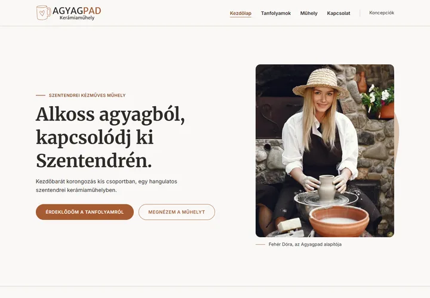
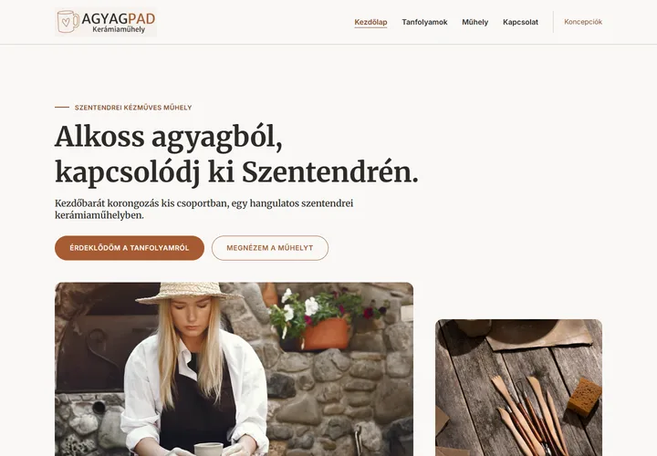
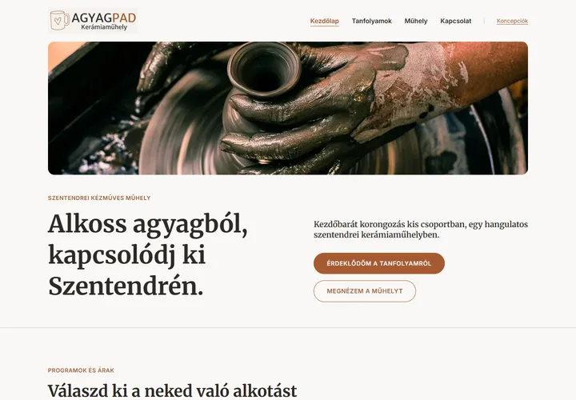

01 · Kiválasztott és finomított irány
Udvari műhely
Anyagközeli nyitókép, mély türkiz kiemelések és áttekinthető programok. A részletes kínálat külön tanfolyamoldalon olvasható.
Megnézem a koncepciótUgyanazok a földszínek, ugyanaz a történet, három különböző elrendezés. Nyisd meg és görgesd végig mindegyiket, mobilon is.

Anyagközeli nyitókép, mély türkiz kiemelések és áttekinthető programok. A részletes kínálat külön tanfolyamoldalon olvasható.
Megnézem a koncepciót
Magazinszerű elrendezés, aszimmetrikus fotópárok és közelről megmutatott műhelyrészletek.
Megnézem a koncepciót
A kéz mozdulata, az agyag felülete és a kész kerámiák adják a széles képekre épülő oldal ritmusát.
Megnézem a koncepciótNem kell egyetlen változat minden részét választanod.Jegyezd fel, melyik nyitókép, elrendezés vagy műhelybemutatás tetszik. Ezekből alakítjuk ki a végleges oldalt.